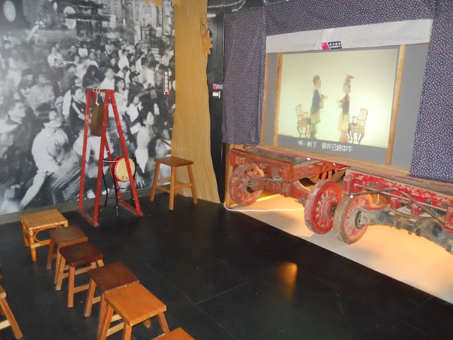

|  | 臺灣皮影戲是從中國大陸流傳而來的。傳說在西漢時期，漢武帝因李夫人的亡故，久久無法振作。臣子們請方士李少翁招李夫人亡魂並設置帳幕，以燈投影出李夫人的模樣，使漢武帝仿若看到依人倩影，稍稍慰藉思念之情...... |
| 據復興閣皮影戲劇團團長所說，皮影戲的祖師爺為「田都元帥」，當地人稱「田老爺」，皮影戲由大陸廣東省潮洲流傳至臺灣。 早期農業社會沒有什麼休閒，於是看戲變成娛樂的主流，戲團可說是蓬勃發展。有些地方，即使沒有戲院，也會有臨時搭建的戲棚來演戲。可見當時民眾熱愛看戲的狂熱程度，不比現在的粉絲遜色！ 從民國50幾年後，電視的出現，使得傳統戲劇開始沒落... | |